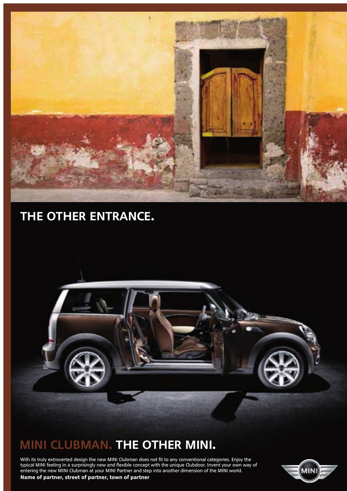
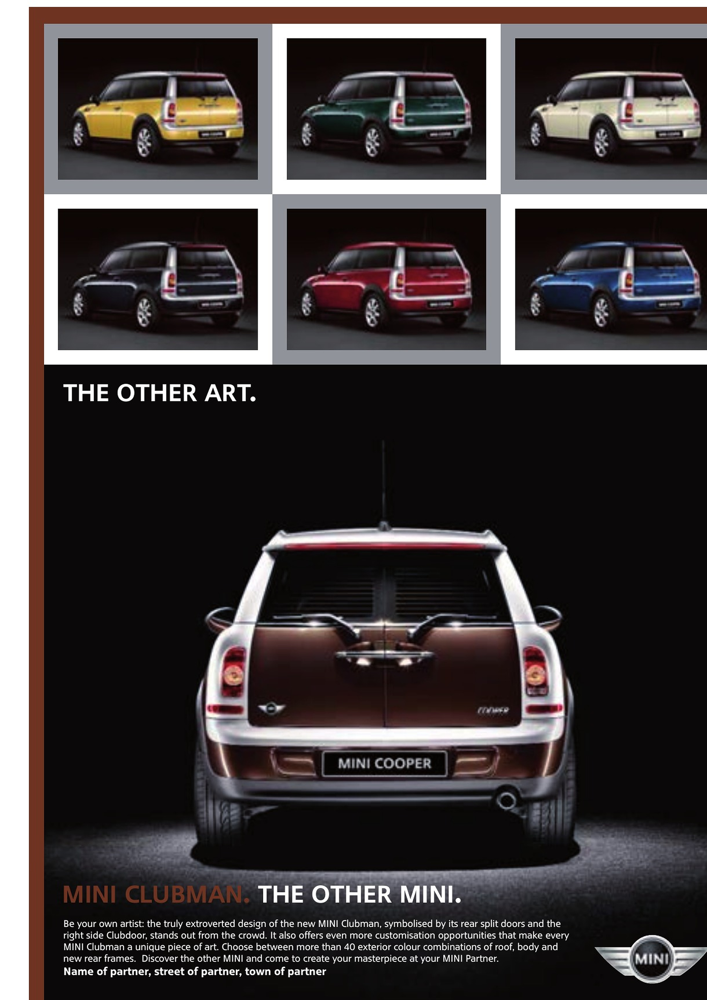

Challenge
Developing a MINI Clubman campaign was only part of the task. The creative idea also had to work across different international markets, including African markets and the Middle East, with their respective communication requirements.
MINI Clubman
Campaign development and international adaptation for the MINI Clubman — from creative concepts to market-specific executions across Africa and the Middle East, including the UAE.

Challenge
Developing a MINI Clubman campaign was only part of the task. The creative idea also had to work across different international markets, including African markets and the Middle East, with their respective communication requirements.
My role
I developed creative routes and visual concepts independently, taking responsibility for both concept and design. I also guided a junior art director in the creative work. Client communication was handled by the agency.
Approach
I developed creative routes and campaign motifs, then adapted the work for different markets and formats — including Africa and the United Arab Emirates. The challenge was to respond to local requirements while retaining the distinctive MINI tone and visual identity.
Outcome
The result combined campaign development with international market adaptation: a coherent creative approach translated into different regional executions.
Key capabilities
Selected motifs from the international MINI Clubman launch campaign.



Next project
Cap Anamur